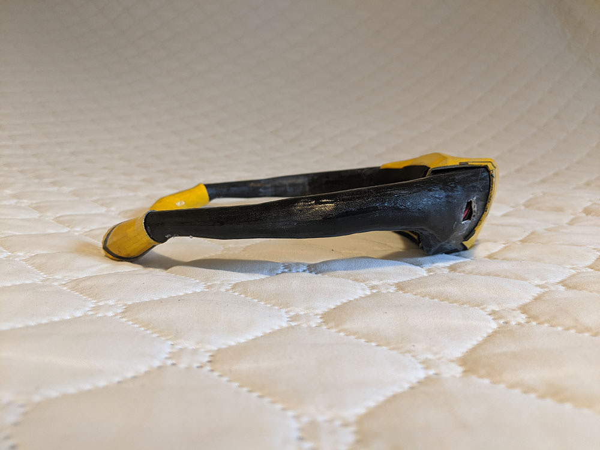
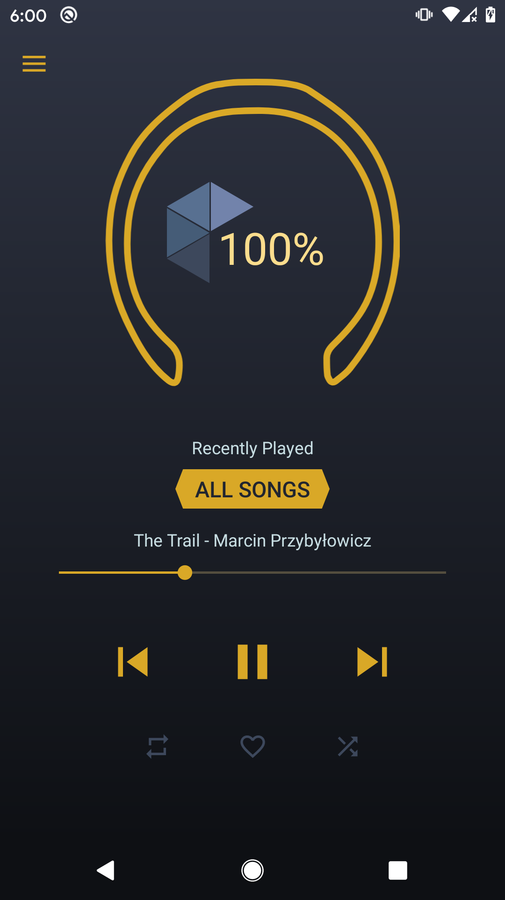
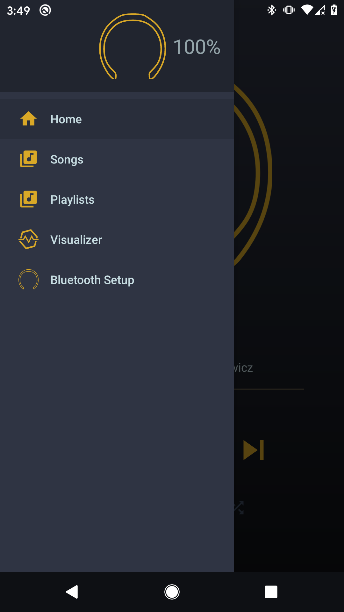
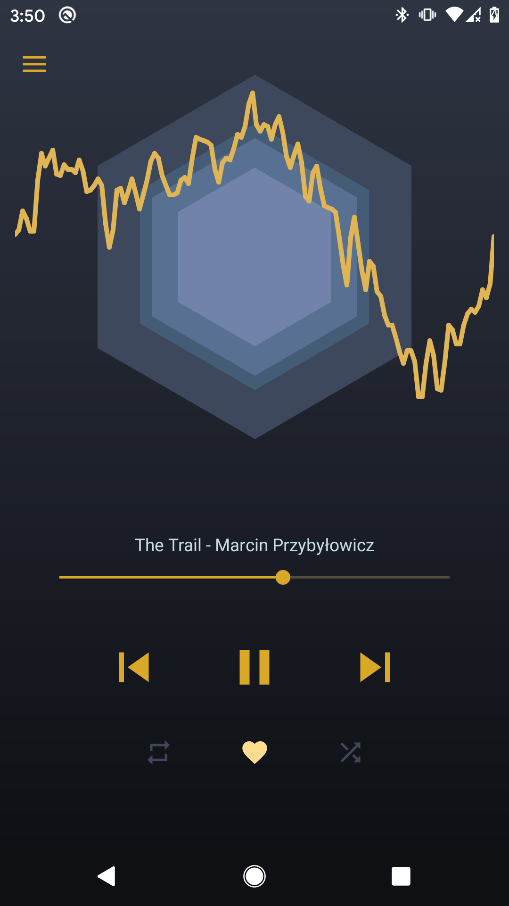
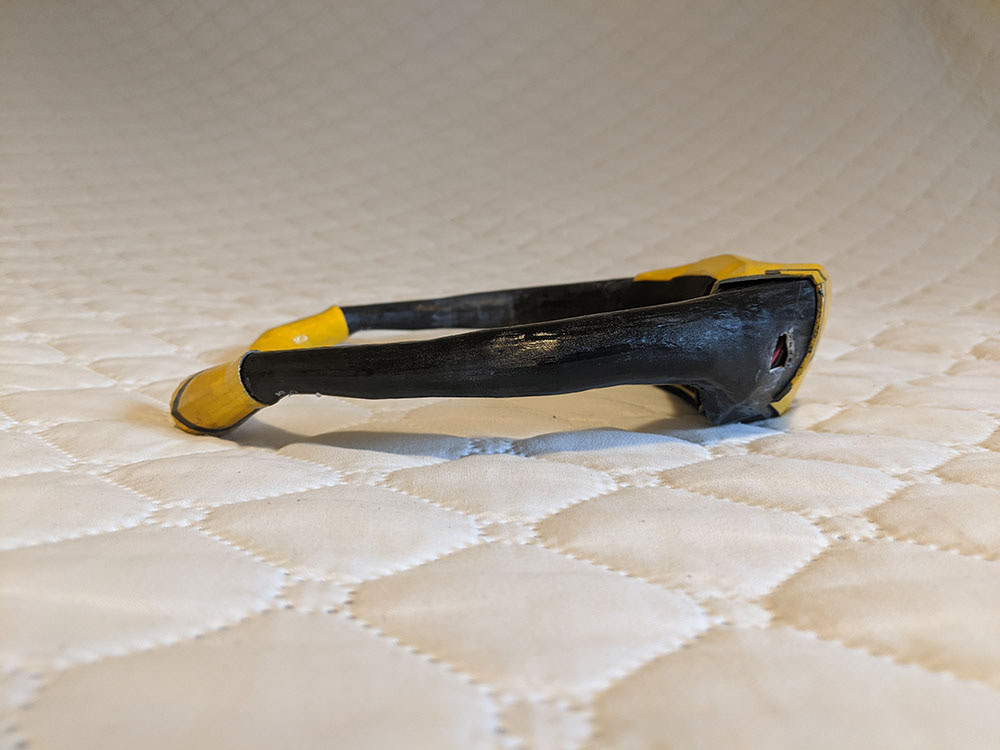
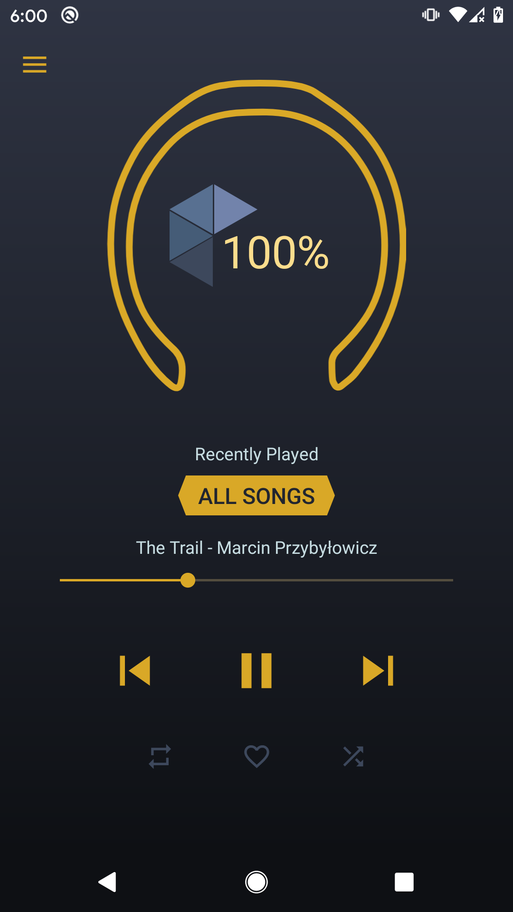
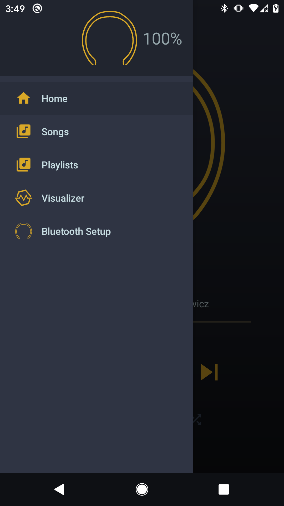
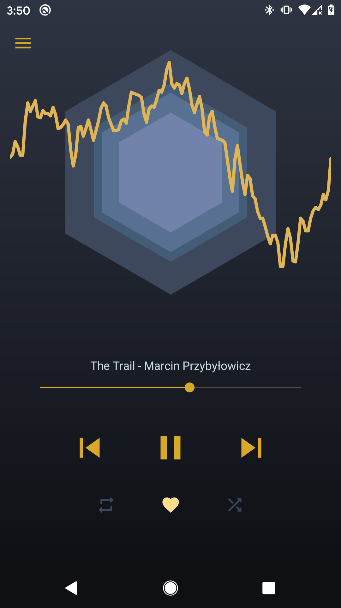

The Queen Bee
The Queen Bee is a prototype device which allows users to experience music through touch and sight, rather than sound. The device produces vibrations in response to the bass frequencies of the playing song, while the companion application display this information in a visualizer. It is intended to be relatively small and discrete, particularly in comparison to those devices already present in accessibility research (vibrational chairs) or on the market (the SubPac and the Woojer Strap). The application was designed for Android and connects to the device via a Bluetooth Low Energy connection.
This device and application were created in collaboration with Amanda MacLeod, Hannah Perks, Jonah Janakovic, and Kalia Hameiri as part of our Fourth Year senior project. My contributions involved the website design, planning and implementing the user tests, documentation, and application development.
Images of the device can be found below, but additional information is present on its dedicated website and in the videos on the team's Youtube channel.
Features
- Neckband was 3D modeled and printed, then smoothed, refined, and painted
- Neckband components were held in place with removeable hard clips to provide structure, support, and protection for sensitive chips while keeping the arms flexible
- Neckband arms contained gooseneck tubing to allow them to hold position while still being adjustable
- Mobile application had all basic music player functions (play, pause, skip, shuffle, loop, and repeat), as well as song favouriting, custom playlist creation, and a music visualizer that responds to bass frequencies
- Bluetooth connection between the app and the neckband
Tasks
- Prototyping of app functions
- Creation and facilitating user tests for neckband, vibration motors, and multiple tests for various app stages
- Documentation and website manager
Gallery


 






